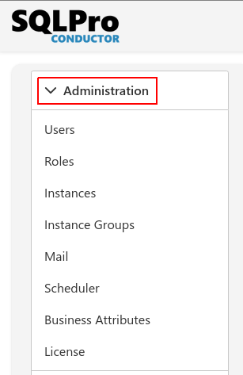

Introduction
Your typical setup and administration section of any application. You start here to set up SQLPro.
To reach the administration section click on the Administration Icon.

The administration menu offers the following options:
- Users - allows you to add/revoke user access to the system.
- Roles - allows you to create custom roles.
- Instances - the heart of the system, without instances, you can't do anything in the system. Here you add/remove/configure instances from SQLPro and SQLSense
- Instance Groups - allows you to group instances for easier management.
- Mail - setup an email list to better make use of the live alerts and reporting features of the system.
- Business Attributes - allows you to add additional information to your instances adding more options when filtering your data on screen.
- License - find all the details of your license and possible modules you can add to get the most out of the service.